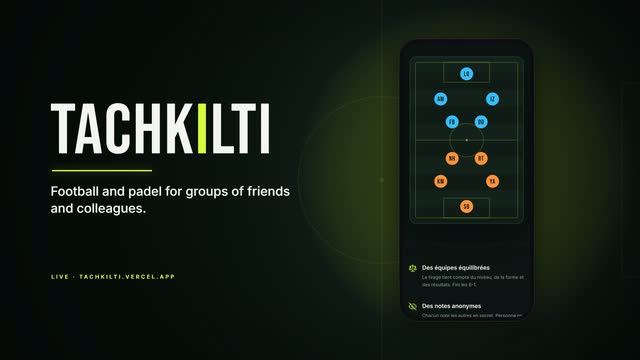
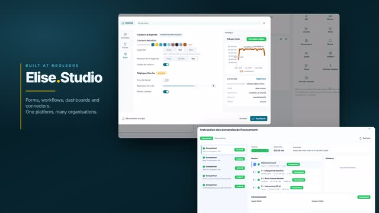
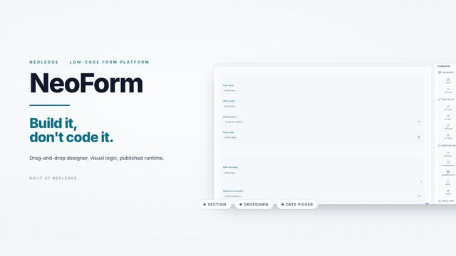
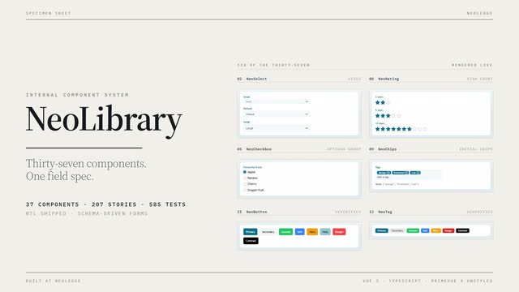
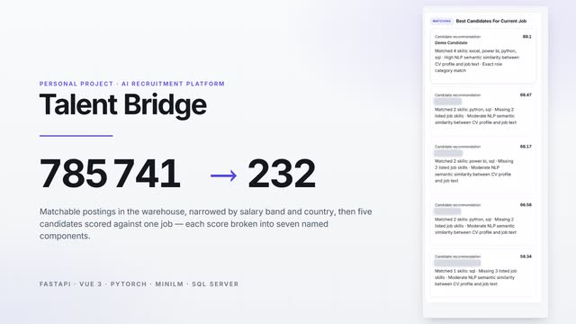
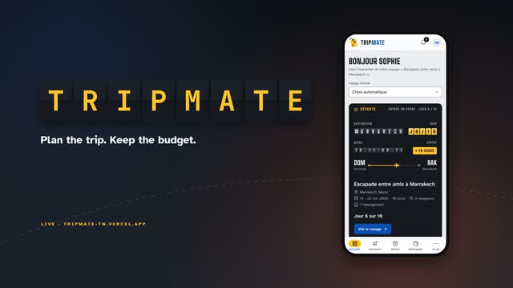
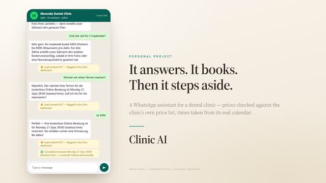
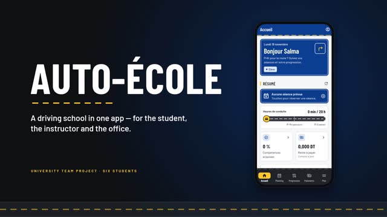
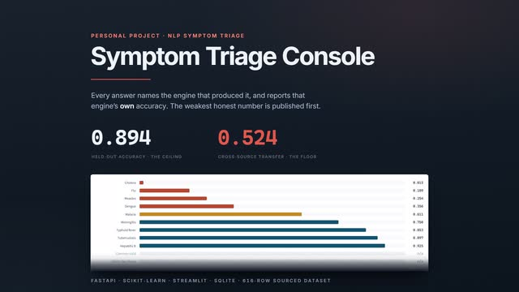

Tachkilti
Football and padel for groups of friends: sign-ups from the phone, teams drawn level, and anonymous scores nobody can trace — not even the platform owner.
- Full stack
- Security
- Mobile
Ten products, each with a film recorded from the running app. Filter by kind of work, or search by name and technology.

Football and padel for groups of friends: sign-ups from the phone, teams drawn level, and anonymous scores nobody can trace — not even the platform owner.

Nine business modules behind one console, with every request's tenant enforced four separate times — down to row-level security in PostgreSQL.

A low-code platform: admins drag forms together, wire their logic in Blockly, and publish them inside the product or as a link a stranger can open.

One tested source of truth for every NeoLedge product's fields: 37 Vue 3 components whose state classes are pure functions, asserted with nothing mounted.

Job matching that shows its work: a seven-part score over 785,741 scraped postings, with every sub-score, matched and missing skill, and written reason in the response.

A travel planner whose budget analysis warns before the money runs out — and whose AI never sees a traveller's name.

A WhatsApp assistant for clinics that answers in the patient's language and books appointments — and only ever quotes prices the clinic published.

A driving school in one app — student, instructor and office — where a student's progress is replayed from the lesson sheets, never stored twice.
A brand site and back office for a Tunisian menswear label, built instead of paying for Shopify — every order line priced from the database, never from the client.

Symptom notes in, a triage suggestion out — with a published measure of where the classifier fails, shown beside its accuracy.
No project matches that search in this category.
The student projects and exercises the products above grew out of, newest first.
| Repository | Year | Stack | What it is | Code |
|---|---|---|---|---|
| Smart City Traffic Simulator | 2026 | C · Linux | A smart intersection simulated with processes, threads, shared memory and semaphores, built to make operating-system concepts visible. | Public |
| Franchise Management CRM | 2025 | FastAPI · React | A CRM for franchises, branches and budgets, built as a timed interview exercise, with Pytest on every push. | Public |
| Tournament Manager JavaFX | 2024 | Java · JavaFX · MySQL | A desktop app for running tournaments: teams, matches, fixtures and sign-in. | Public |
| Resume Parser API | 2023 | Python · FastAPI · spaCy | Reads a mailbox over IMAP, pulls CV attachments and parses them — built at Sofiatech. | Private |
| Document Intake Automation | 2023 | Python · Tkinter | The operator front end for the resume pipeline: files CV attachments on its own. | Private |
| Internship Recruitment Platform | 2023 | Angular · Express · MongoDB | Job, internship and final-year-project openings, with candidates scored against each opening. | Private |
| JWT Authentication API | 2022 | Express | A small API written to get JWT auth right and nothing else. | Public |
| Match Ticketing Platform | 2022 | Angular 14 | Football match tickets: fixtures, seat counts and an admin view. | Public |
| MERN E Commerce Store | 2022 | MongoDB · Express · React · Node | Catalogue, reviews and a four-step checkout ending in PayPal. | Public |
| Aleria Consulting Web App | 2022 | React · Apollo GraphQL | Billboard booking: companies request panels, owners accept or reject, live notifications. | Private |
| Ad Panel Map Prototype | 2022 | React · Mapbox | The map prototype that became the billboard booking platform. | Public |
| AR Tree Planting Visualizer | 2022 | Unity · AR Foundation · C# | Lays out tree planting on real ground through the phone camera, with four water-harvesting techniques. | Private |
| Travel Agency Web App | 2021 | Angular 12 · Leaflet | Browse destinations, hotels and offers, then reserve a trip. | Public |
| Travel Agency API | 2021 | Express · Mongoose | The 32-endpoint REST API behind the travel agency front end. | Public |